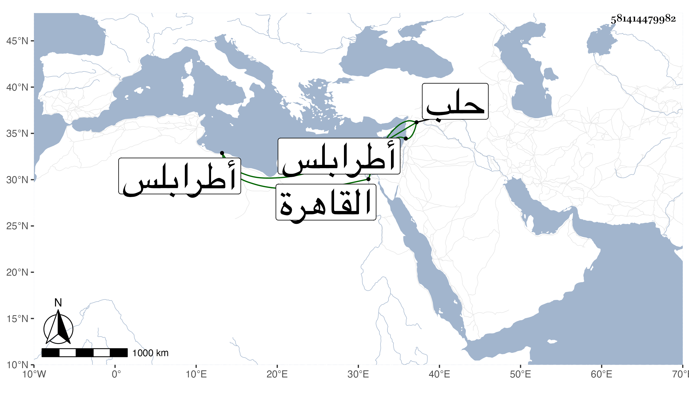

0902Sakhawi.DawLamic.ITO20230111-ara1.EIS1600.581414479982
Biography ID: 581414479982
589
محمد بن الأمير دقماق ناصر الدين الماضي أبوه . ولاه الأشرف برسباي نيابة المرقب وأنعم عليه بأمرة طبلخاناه بطرابلس بعد أن استقدمه من حلب وبالغ في إكرامه لكونه منسوبا إلى أبيه كما تقدم فدام بالمرقب مدة ثم عزله وأنعم عليه بأمرة عشرة بالقاهرة ، واستمر بها حتى مات في طاعون سنة ثلاث وثلاثين ، وكان مليح الشكل رأسا في رمي النشاب .
